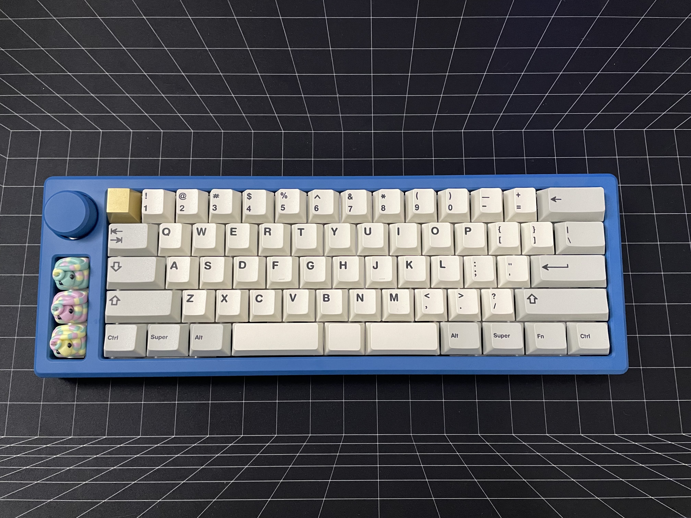
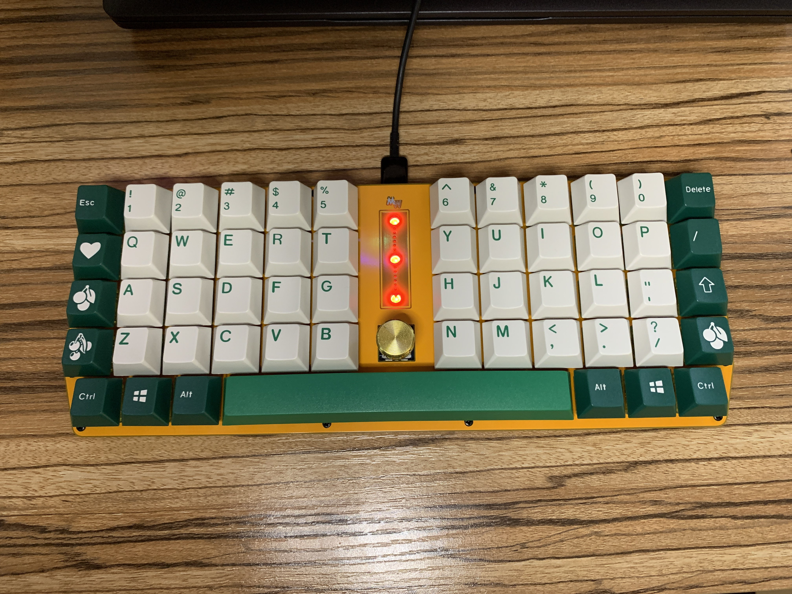
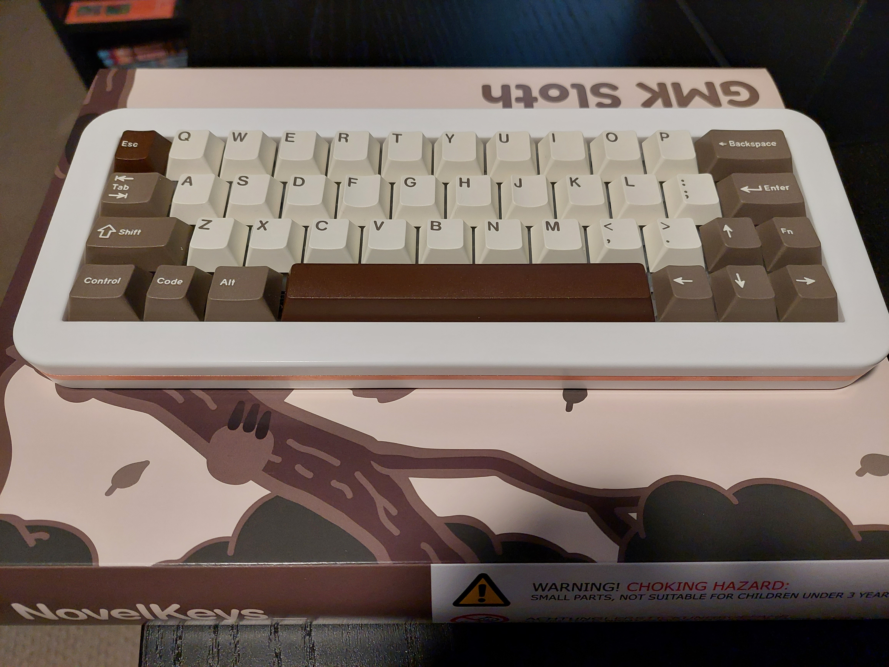
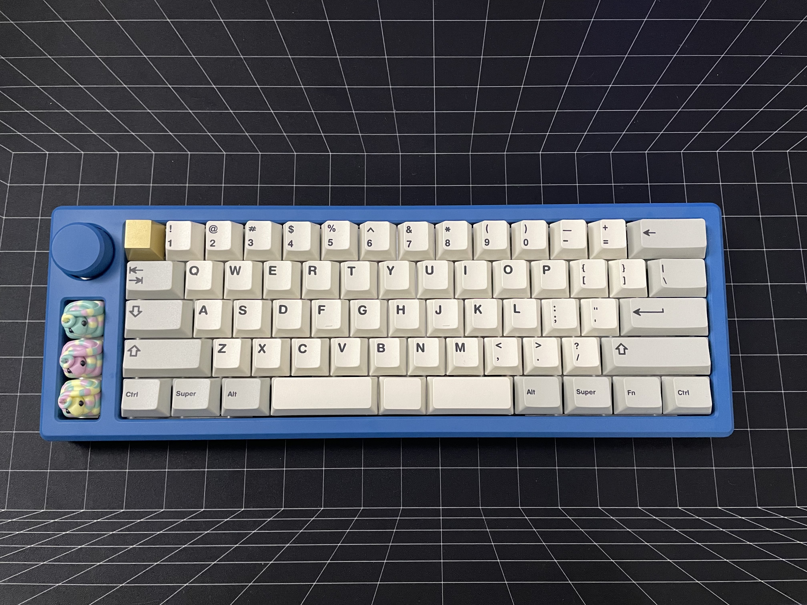
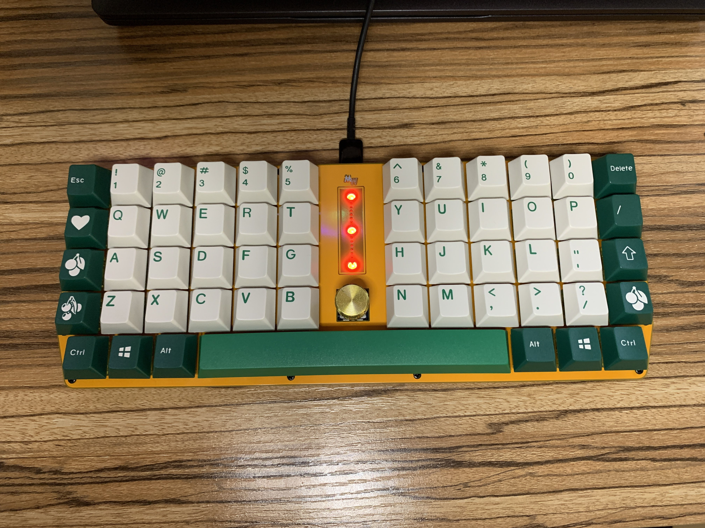
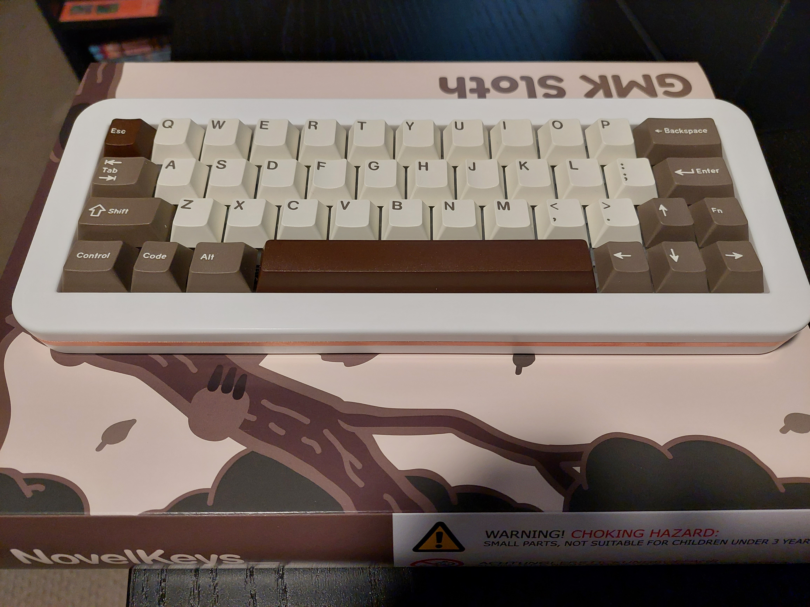
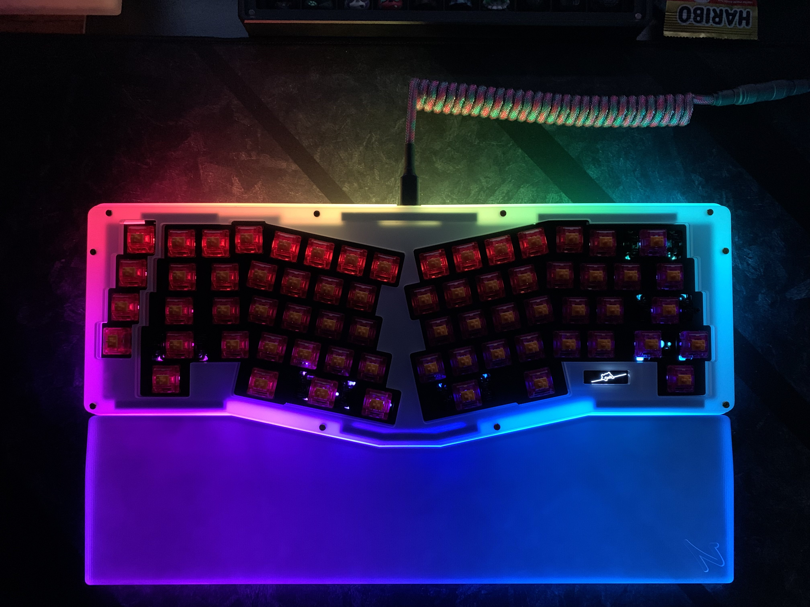
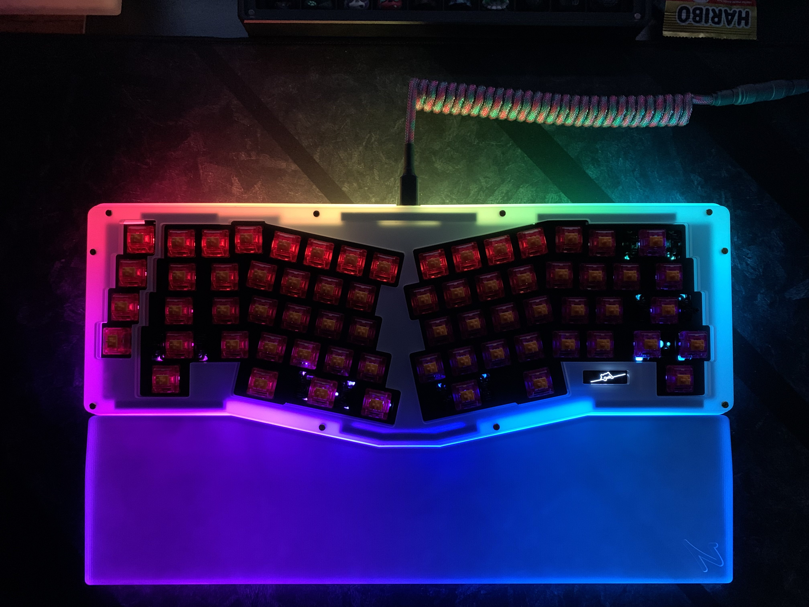

Większość osób nie zwraca uwagi na swoją klawiaturę, ale nie da się ukryć że jest to bardzo ważny element dla osób które często pracują przy komputerze. Mimo tego, że osoba może sobie na początku nie zdawać sprawy jak ważne jest przyjemność z korzystania z klawiatury.
Odpowiedź jest dosyć prosta. Jedynym innym, lecz zdecydowanie częściej spotykanym, rodzajem, są klawiatury membranowe. Różnica polega na odczucu pisania, i dźwięku naciskania klawiszy. Ważną częścią jest również możliwość własnego ulepszania klawiatury i zmieniania jej części. Jedynym powodem, dla którego klawiatury mechaniczne są rzadziej spotykane, jest cena. Klawiatury mechaniczne z wysokiej półki potrafią kosztować nawet ok. 20000zł, a tańsze modele i tak są często kilkukrotnie droższe od membranowych.
Klawiatury membranowe są po prostu łatwiejsze do wyprodukowania, ale często są również gorsze w jakości. Większość bardzo drogich modeli jest dodatkowo projektowana przez pojedyncze osoby lub małe grupy, zamiast ogromnych korporacji.
Najważniejsze elementy to:
Każdy z tych elementów może wpływać na jakość pisania i dźwięk klawiatury, ale mimo wszystko najbardziej na to wpływają switche.
Dla dodatkowych informacji, polecam stronę Keyboard University (UWAGA! Cała strtona jest napisana w języku angielskim) 






 
